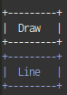
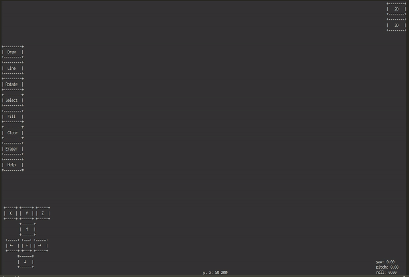
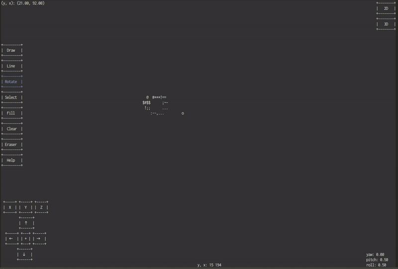
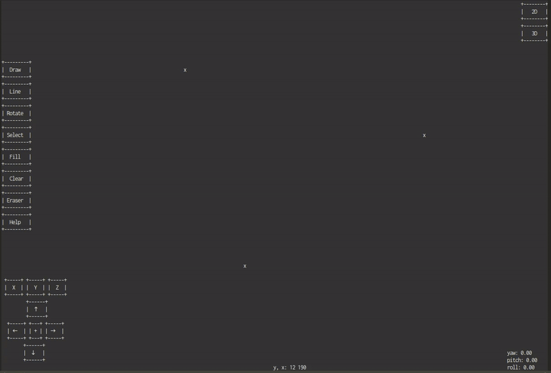
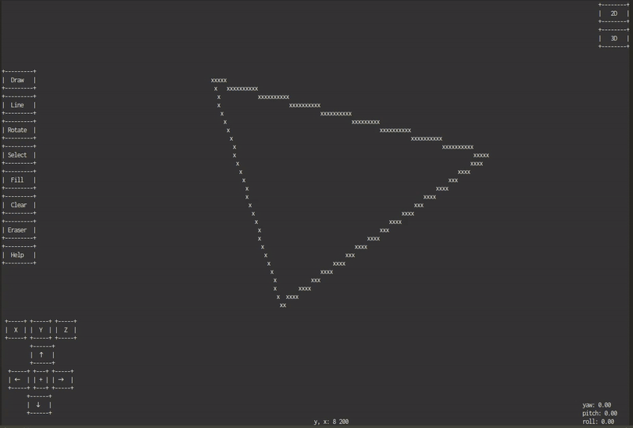
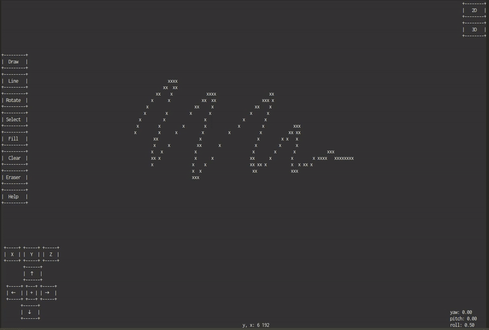
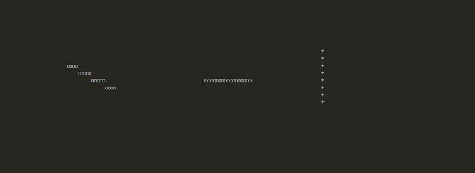
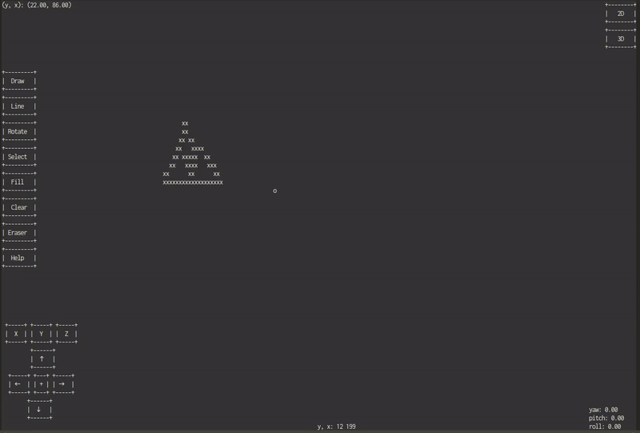

2D や 3D な物の創造アプリ
デモ
この作品作るきっかけは?
最近油絵と描きなどに夢中してしまって、なんとなく描きが関係あるアプリを作りたいなと思っていました。
ネットで調べてみたら、このくるくるドーナツを見つけました。
くるくるドーナツ
そこでいいアイデアが思いつきました。「2D なものを 3D に変更できるアプリっていいんじゃない?」と考えました。
ちなみに「きかかき」は漢字で「幾何・描き」
インストール
- ソースファイル：kkkk-0.3.tgz
- コンパイル・実行：
$ tar zxvf kkkk-0.3.tgz
$ cd kkkk-0.3/
$ make
$ ./kkkk
操作方法
- 注意 :
- 'q' 押せば出る
- 画面の文字が大きすぎるならばボタンが重なるため、画面を小さくしてください (ctrl + (-)) (アプリ使用中場合 shift+c もしてください)
- クリックはちゃんとしなければならない。Ubuntuの画面は反応が悪いので、クリックしたまま１秒くらい待ってください。手離すときも mouse 動くまえに１秒くらいで待ってください
- 念のため、複数の機能お互いにつけないこと。例: Line + Selection
- 使用の際には日本語か英語以外の言語入力など使わないでください
- 使用中画面リサイズを対策したが問題なしまでと言えないのでできるだけ避けてください
- 画面がボロボロになったら shift+c してくさだい (もし選んだものがあったら "2D" 押したらそのものが出る)
- Double click がたまに受け取らないので、よければ shortcut を使ってください
- ボタン色:
- Blue: ついている
- White: ついてない
 Drawがついてない, Lineがついている
- Draw :
- Click (shortcut 'd'): ペンをトグル。ペンがついているとき、mouse クリックしたままで動くと、"x" が出る。
- Double click (shortcut shift+'d'): *特別: ついていれば CYAN が表す。このボタンがついていれば、ものを移動または回転するとき表したもとのものは消さない。
 Draw デモ
 Draw double click デモ
- Line:
- Click (shortcut 'l'): 二つの点を選んであと線ができる。
 Line デモ
- Rotate:
- Click (shortcut 'r'): 最初に一つの点を選ぶ、その点は中心とする。選んだものがあったら (selection あと)、そのものを選んだ点の周囲に (X, Y, Z)角度 回転させる。
- Double click (shortcut shift+'r'): 選んだ中心を消す。
- Select:
- Click (shortcut 's'): mouse クリックしたままで動くと、箱が出る。 その箱でものを選べる。選んであと改めて click または 's' を押す必要がある。しないと、選んでない。
 Rotate と Select デモ
- Fill:
- Click (shortcut 'f'): 選んだもの (selection あと) の中に 'x' を詰める。
Fill デモ
- Clear:
- Click (shortcut 'c'): 画面をクリア。中心も消す。
- Erase:
- Click (shortcut 'e'): ペンと逆、クリックしたままで動くと、' ' を入れる。
 Erase デモ
- Help: (Scoll 可能)
- Click (shortcut 'h'): この画面を示す。もう一度 'h' を押せば、Help 画面を非表示にする。*この画面を表示する間、画面クリックまたは他の shortcut が機能しない。

Help デモ
- X: X 軸周囲の回転角度 ( roll )
- Click (shortcut 'x'): 角度を増やる。
- Double click (shortcut shift+'x'): 角度を減らす。
- Y: Y 軸の周囲の回転角度 ( pitch )
- Click (shortcut 'y'): 角度を増やる。
- Double click (shortcut shift+'y'): 角度を減らす。
- Z: Z 軸周囲の回転角度 ( yaw )
- Click (shortcut 'z'): 角度を増やる。
- Double click (shortcut shift+'z'): 角度を減らす。
 - * (X, Y, Z) について:
- 角度>2*pi になったら 0 に戻る。
- 角度<0 になったら 2*pi になる。
 XYZ デモ
- 🡑 :
- Click (shortcut KEY_UP): 選んだものを上に移動する。
- 🡓 :
- Click (shortcut KEY_DOWN): 選んだものを下に移動する。
- 🡒 :
- Click (shortcut KEY_RIGHT): 選んだものを右に移動する。
- 🡐 :
- Click (shortcut KEY_LEFT): 選んだものを左に移動する。
- +:
- Click (shortcut 'o'): 現在機能しない ( 未作成: Undo ボタン予定 )
Translation デモ
- 2D:
- Click (shortcut '2'): 選んだものの z に関わらず、ものを示す。*この機能がものが持つ pixel で示すので、もしもう 3D に変更したら、そのままで示す。
- 3D:
- Click (shortcut '3'): 選んだものを ３次元で示す。
現在の状況と今後の展開
未作成・解けなかった問題
- Undo 機能: 画面を保存のは大変である。一回 (xyz) 200*200*200、30回 30*200*200*200...
- まだ3Dではない: 作れるものは実際 x*y*1 のものだ。上記のいきいきドーナツになれない。これが最初追加したい機能ですが、興味がある人はやってみてください
- 作ったもの保存できない: 効果的にどうやって保存するのかまだ解けない
- 画面のピクセル: ピクセルが正方形ではないため、x:y は 1 に比例していない。そこで完璧な円が創造できない
参考
- "Scanline Filling Algorithm" (Medium, 英語) (fillPolygon() 関数が使われたアルゴリズム)
- "Bresenham line algorithm" (Wiki, 英語) (drawLine() 関数が使われたアルゴリズム)
- "Ncurses: windows" (tldp, 英語)
- "Ncurses: mouse" (tldp, 英語)
- "Feature scaling: use to give object its volume" (Wiki, 英語) (renderOBJ() 関数が使われたアルゴリズム)
- "くるくるドーナツ" (a1k0n, 英語)
- "Z-buffer: " (Wiki, 英語) (renderOBJ() 関数が使われたアルゴリズム)
- "Rotation matrix" (Wiki, 英語) (rotateAroundPoint() 関数が使われたアルゴリズム)